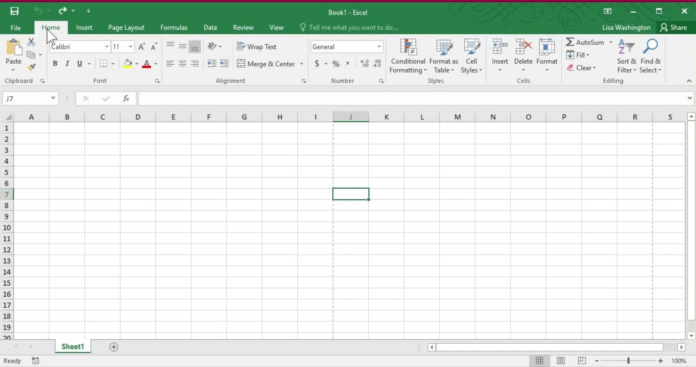
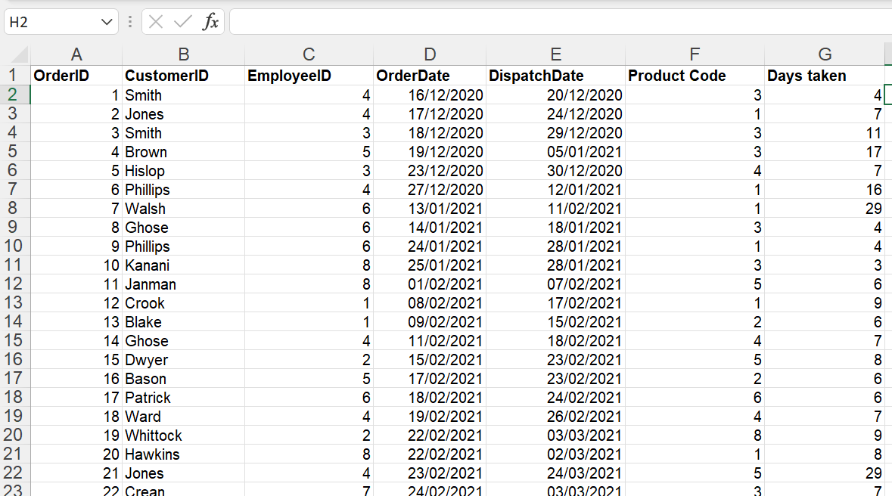
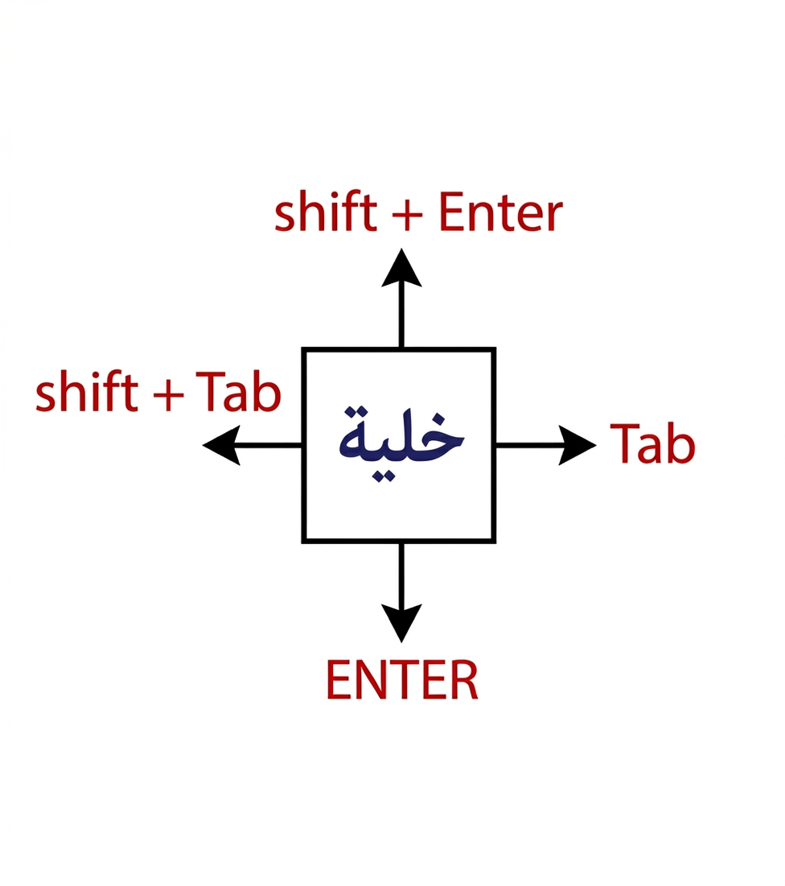

برنامج Microsoft Excel
يُعد برنامج إكسيل (Microsoft Excel) أحد أشهر البرامج التابعة لحزمة "مايكروسوفت أوفيس"، وهو برنامج متخصص في إنشاء الجداول البيانات الإلكترونية (Spreadsheets) وإدارتها.
واجهة برنامج Microsoft Excel:-

ورقة العمل (Worksheet): تُعرف ورقة العمل (Worksheet) في برنامج إكسيل بأنها المساحة المخصصة لإدخال البيانات ومعالجتها، وهي عبارة عن شبكة ضخمة تتكون من تقاطع الصفوف والأعمدة.
الاعمدة (Columns): تسير بشكل رأسي و يرمز إليها بالأحرف الإنجليزية (A, B, C...) حيث تبدأ الحروف من A إلى IV بإجمالي 256 عمود في Excel 2003 و عدد الاعمدة 16384 عمود في Excel 2007 حيث يبدأ من A إلى XFD.
الصفوف (Rows): تسير بشكل افقي ويُرمز إليها بالأرقام (1, 2, 3...) حيث تبدأ الارقام من 1 إلي 65536 في Excel 2003 وعدد الصفوف 1048576 صف في Excel 2007.
الخلايا (Cells): هي نقطة تقاطع الصف مع العمود وهي الوحدة الأساسية التي يتم كتابة النصوص أو الأرقام أو المعادلات بداخلها. لكل خلية اسم فريد على حسب موقعه.
الخلية النشطة: هي الخلية المحددة لادخال بها البيانات.
استخدامات برنامج Excel:-
- تنظيم و تحليل البيانات.
- عمل جداول بيانات.
- استخدام الصيغ و الدالات لتنفيذ العمليات الحسابية.
- إنشاء رسومات بيانية.
تشغيل برنامج Excel:-
- الضغط على أيقونة Start لعرض القائمة.
- تحريك الفأره للوصول إلي Programs.
- ظهور قائمة فرعية ثم الضغط على Microsoft Office.
- ظهور قائمة فرعية ثم الضغط على Microsoft Excel.
- تظهر نافذة إكسيل و تعرض ورقة عمل فارغة Worksheet.
البيانات:-

طريقة إدخال البيانات:-
- يتم اختيار الخلية المراد الكتابة بها لتكون نشطة ثم ادخال البيانات.
- للأنتقال للخلية التالية بالضغط على زر Enter او Tab.
- لإدخال سطر جديد في الخلية، اضغط ALT + ENTER.
تعديل البيانات:-
- بالضغط على الخلية المراد تعديلها Double Click ثم يتم تعديل البيانات وسيمسح ما كتب سابقاً تلقائياً.
- أو يتم إختيار الخلية ثم تحريك السهم لشريط الصيغة وتعديل البيانات.
مسح البيانات:-
- يتم تحديد الخلية المراد مسح بياناتها.
- بالضغط على زر Delete.
التنقل بين الخلايا:-
- باستخدام الأسهم من لوحة المفاتيح.
- أو بإستخدام الماوس.
- بالضغط على زر Enter يتحرك لأسفل أو Tab.
إختيار الخلايا:-
تحديد نطاق من الخلايا المتجاورة:-
- يتم إختيار الخلية الأولى.
- بالضغط على زر Shift مع الإستمرار في الضغط.
- ثم السحب بالماوس على الخلايا المراد تحديدها أو التحرك بالأسهم.
تحديد نطاق من الخلايا الغير متجاورة:-
- يتم إختيار الخلية الأولى.
- بالضغط على زر Ctrl مع الإستمرار في الضغط.
- ثم السحب بالماوس على الخلايا المراد تحديدها و بنفس الطريقة السابقة يمكن تحديد نطاق من الصفوف أو الاعمدة.
تحديد ورقة العمل بالكامل :-
- بالضغط على الزر الموجود بين أول صف (1) وأول عمود (A).
- من لوحة المفاتيح Ctrl + A.
طرق نقل إطار الخلية النشطة :-
- باستخدام مفتاح الأسهم.
- باستخدام مفتاح الإدخال Enter.
- باستخدام مفتاح الحقول Tab.
- باستخدام الماوس.
يمكن ايضاً التنقل بين الخلايا عن طريق المفاتيح الاتية:
